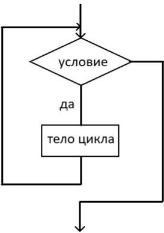
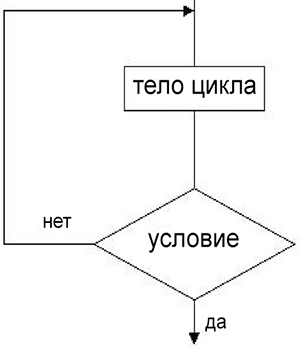

Цикл
Циклическая структура позволяет выполнять определённую последовательность действий многократно. Если условие цикла верно, то выполняется последовательность действий. Последовательность действий, которые выполняются многократно, называется телом цикла. В программе цикл выполняется с помощью операторов цикла. Есть три вида циклических структур:
Цикл с заданным условием продолжения работы
Такой цикл проверяет условие перед телом цикла. Он может не выполниться ни одного раза. Используется оператор while...do
нц пока <условие> <тело цикла> кц
Пример
while a > b do
b := b + 1;
Блок-схема
Цикл с заданным условием окончания работы
Такой цикл проверяет условие после тела цикла. Он выполняется хотя бы один раз. Используется оператор repeat...until
нц <тело цикла> кц при <условие>
Пример
repeat
b := b + 1;
until a > b;
Блок-схема
Цикл с параметром
Такой цикл выполняется заданное количество раз. Используется for...to...do. to увеличивает переменную-счётчик на размер шага (по умолчанию 1), downto уменьшает.
нц для <переменная> от <нач_значение> до <кон_значение> шаг <значение> <тело цикла> кц
Пример
for i := 1 to 10 do
b := b + 1;